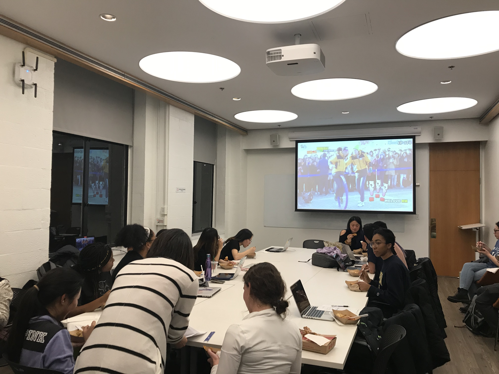
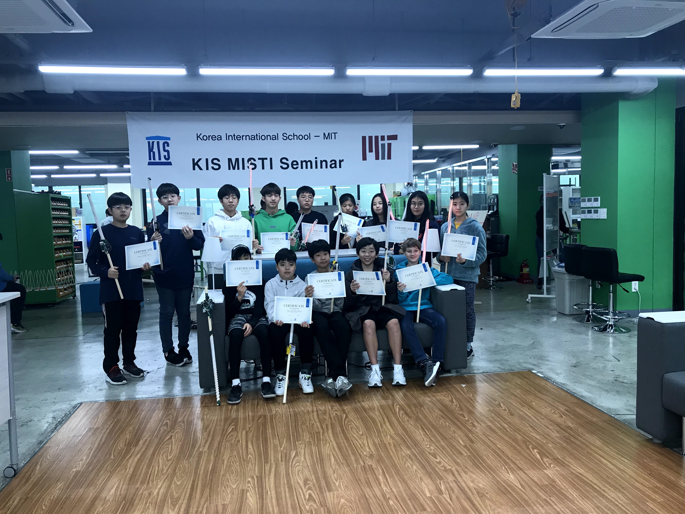
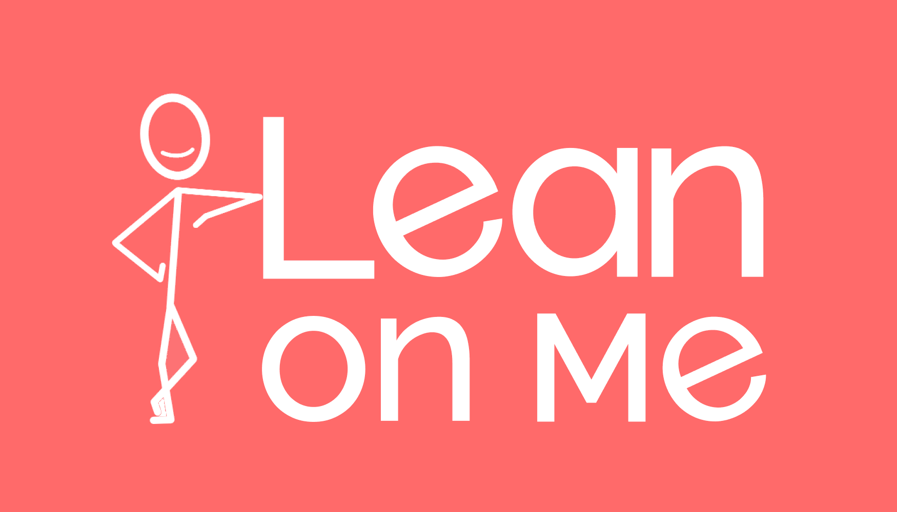
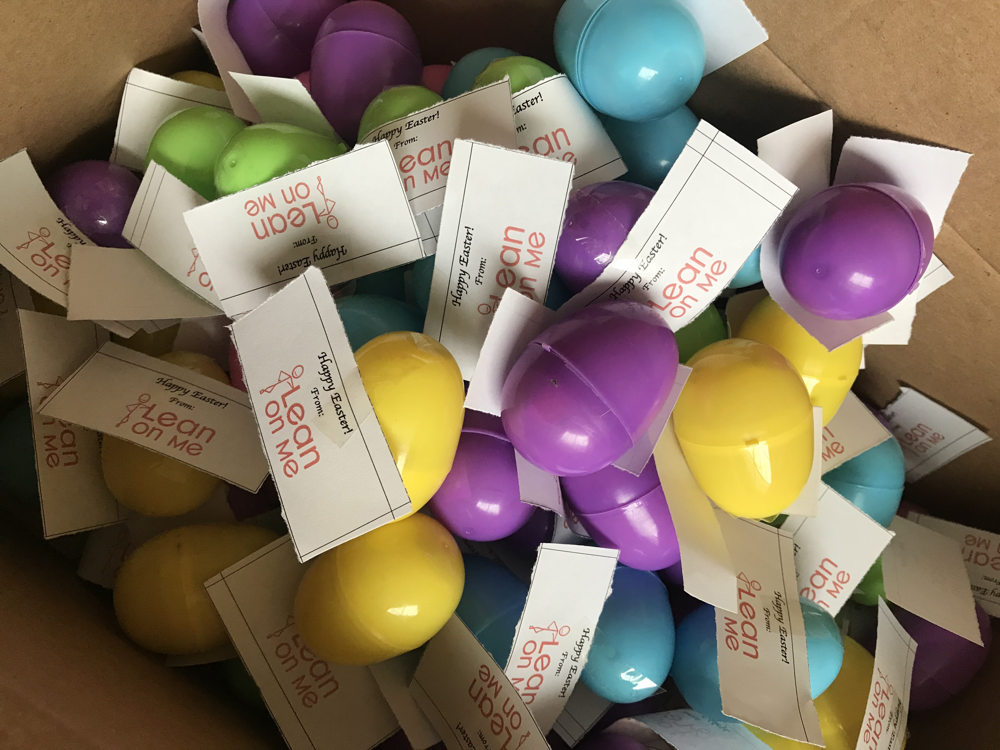

Co-President/Co-Founder September 2019 - Present || Massachusetts Institute of Technology
Korean Cultural Association
Lead a club with other 6 executive members to manage events that spread the knowledge of Korean culture within MIT community.
Revitalize and rebrand Korean Student Association (KSA) to promote inclusivity for MIT students with different background and heritage who are interested in Korean culture.
Manage the logistics of 3 events, one of which had attendance of over 100 people; logistics include reserving the spaces, contacting sponsors, and purchasing products needed for the event.

Workshop Instructor and Teaching Assistant October 2019 - January 2020 || Korea International School, Gyeonggi-do, South Korea
Global Teaching Labs - MIT
Designed 5-day workshop and taught 26 middle schoolers Arduino, coding, and basic electronics in South Korea.
Co-taught over 30 classes of scientific design and coding with Korea International School teachers.
To learn more about MIT Global Teaching Labs, please visit here .

Head of Publicity and Peer Supporter October 2018 – September 2019 || Massachusetts Institute of Technology
Lean On Me
Provides support to MIT students by providing anonymous safe space to have conversations through text messages.
Prepares logistics for campus-wide publicity events and peer supporter internal events.
Manages club events and service’s advertisement through posters, e-mails, and social media engagement.
To learn more about Lean On Me at MIT, please visit here .


Head of Next House Logistics and Dorm Tour February 2018 – May 2018 || Massachusetts Institute of Technology
MIT Campus Preview Weekend Committee
Collaborated with 5 members to manage ~20 events with expected attendance of 50-90 people per event.
Led two events and dorm tours by managing all the planning, preparation, and coordinating the volunteers.
Managed the logistics for all the event, from reserving the spaces, filling out the safety forms, to purchasing products needed for the events.
To learn more about MIT Campus Preview Weekend, please visit here .